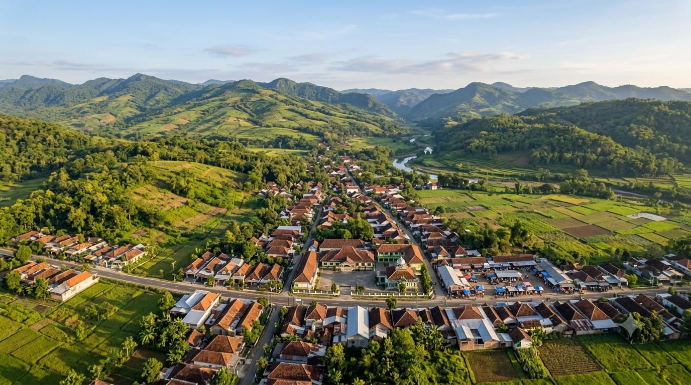

Selamat Datang
Website ini dibuat oleh Tim KKN PINTAR 10 Universitas Nahdlatul Ulama Sunan Giri sebagai media informasi seputar profil, potensi, dan kegiatan pengabdian selama masa KKN di Desa Pajeng, Kecamatan Gondang.
Sejarah, visi misi, dan struktur pemerintahan desa.
Lihat detail →Pertanian, UMKM, dan potensi wisata setempat.
Lihat detail →Kegiatan pengabdian yang sedang & sudah berjalan.
Lihat detail →Kenalan dengan anggota tim & dosen pembimbing.
Lihat detail →Sedang Berlangsung
Sebagian program kerja yang sedang dijalankan Tim KKN PINTAR 10 di Desa Pajeng.
Deskripsi singkat program kerja — ganti dengan kegiatan sesungguhnya.
BerjalanDeskripsi singkat program kerja — ganti dengan kegiatan sesungguhnya.
BerjalanDeskripsi singkat program kerja — ganti dengan kegiatan sesungguhnya.
DirencanakanTerbaru


Lihat susunan anggota tim dan dosen pembimbing lapangan.